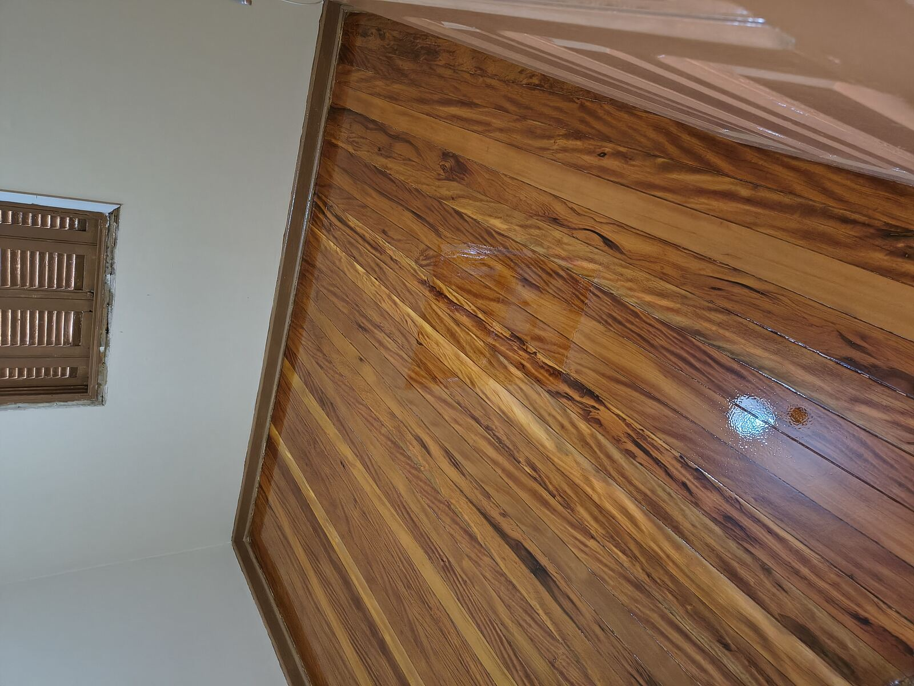
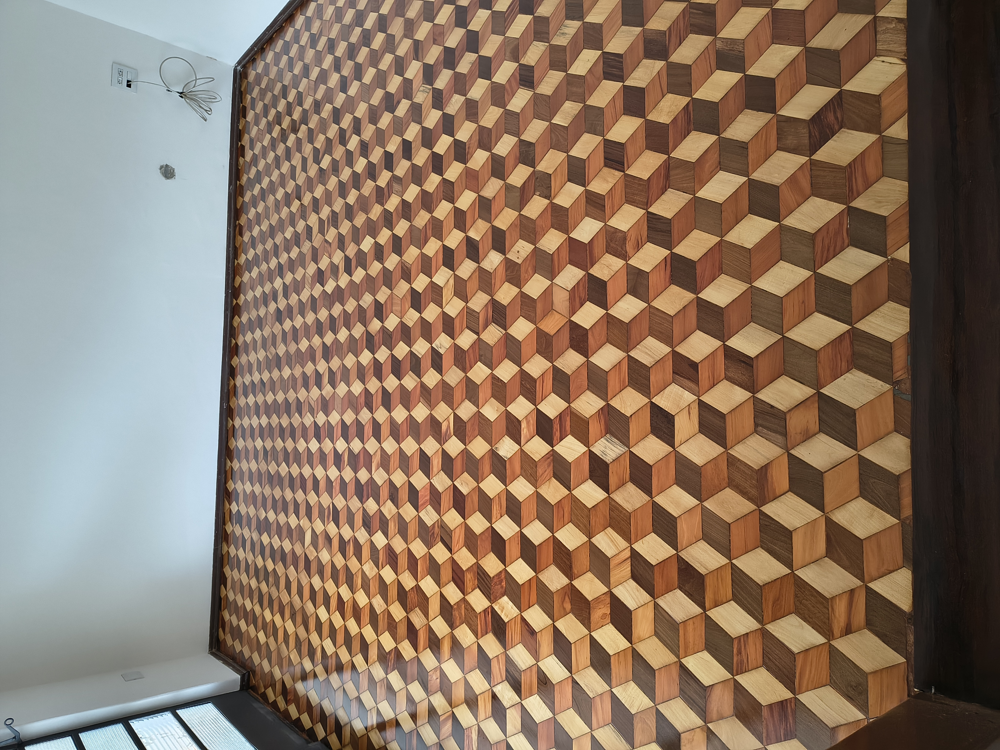
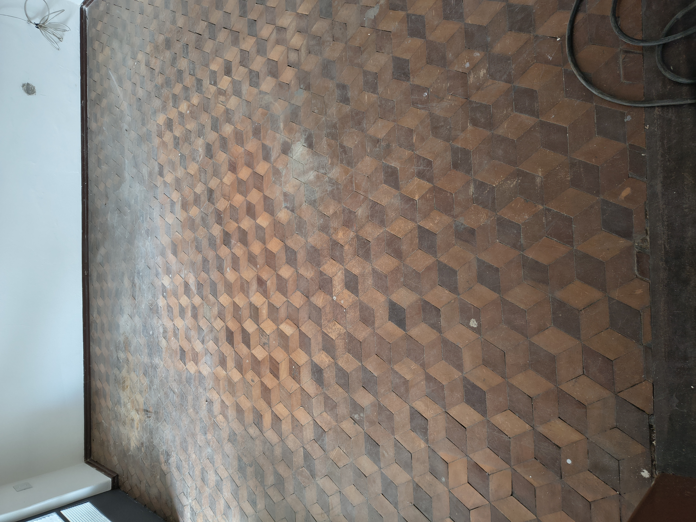
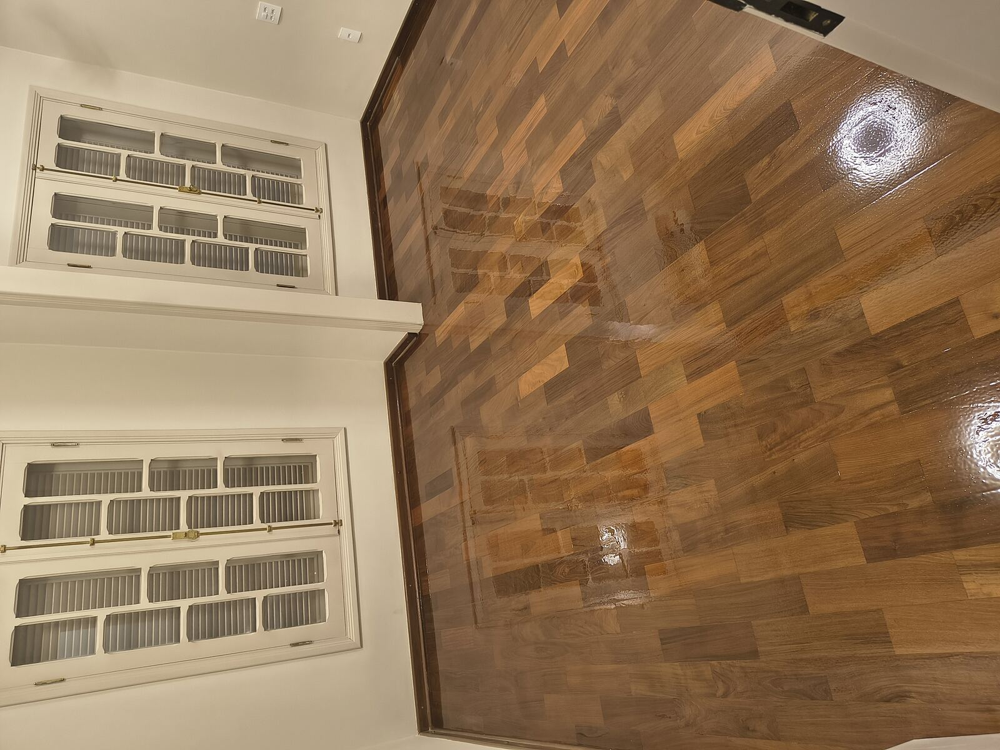

Restauração de pisos de madeira
Raspagem, lixamento, reparo, calafetação e aplicação de verniz sinteko em taco, assoalho, escada, deck. Um trabalho profissional, feito com maquinas modernas que aspiram 98% do pó , fazendo durar muitos anos.

Quem cuida do seu piso
Somos especialistas em raspagem, lixamento, restauração e aplicação de verniz em pisos de madeira, oferecendo um serviço de qualidade para renovar e valorizar o seu ambiente. Trabalhamos com tacos, assoalhos, escadas, decks e diversos tipos de pisos de madeira.
Utilizamos equipamentos profissionais e materiais de alta qualidade para garantir um acabamento impecável, preservando a beleza natural da madeira e aumentando sua durabilidade. Cada serviço é realizado com atenção aos detalhes e compromisso com a satisfação do cliente.
Atendemos residências, apartamentos, comércios e escritórios, oferecendo orçamento gratuito, atendimento personalizado e total transparência durante todas as etapas do serviço. Nosso objetivo é entregar um resultado que supere as expectativas e devolva ao seu piso a aparência de novo.
O que fazemos
Do reparo pontual à restauração completa — cada etapa pensada para o tipo certo de madeira.
Remoção do verniz antigo, manchas e imperfeições, deixando a madeira lisa e pronta para um novo acabamento.
Selador e verniz de qualidade, em acabamento fosco, acetinado ou brilhante, para proteger e realçar a madeira.
Reposição de peças danificadas e tapamento de buracos na junta da madeira.
Lixamento de tábuas largas, correção de frestas e nivelamento para um piso uniforme.
Restauração de degraus e espelhos, mantendo a segurança e a beleza da escada.
Recomendações sobre o uso e manutenção do piso, que prolongam a vida útil e evitam desgastes maiores no futuro.
Anos dedicados exclusivamente à restauração de pisos de madeira.
Seladores e vernizes duráveis, indicados para cada tipo de madeira.
Cronograma claro, definido ainda na visita de orçamento.
Tranquilidade após a entrega, com orientação de cuidados no dia a dia.
Trabalhos realizados
Cada foto é um piso que estava desgastado antes do serviço — e ganhou vida nova depois da raspagem e do verniz.



Como funciona
Um passo a passo simples, para você saber exatamente o que esperar em cada etapa.
Conte o tamanho do ambiente e, se puder, envie fotos do piso atual.
Avaliação no local e orçamento sem compromisso, com prazo e valores claros.
Raspagem, reparos e acabamento, dentro do prazo combinado na visita.
Piso pronto, protegido, com orientações de cuidado no dia a dia.
Orçamento gratuito
Envie uma mensagem agora pelo WhatsApp com fotos do ambiente. Paulo responde pessoalmente e organiza a visita para o orçamento.
Chamar no WhatsApp agora